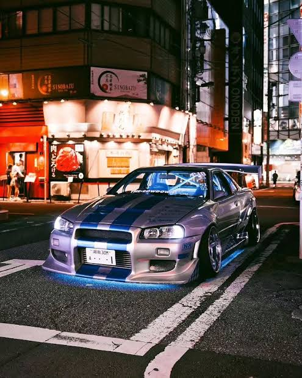

Wheels on Fire is more than just a collection of cars — it’s a place to share my passion and knowledge with anyone who wants to learn more about the automotive world. From showcasing the cars I own and the ones I’ve had over the years, to taking a deep dive into different engines, components, and modifications, there’s always something to explore. I’ve got a particular love for JDM cars and the drifting scene, so you can expect plenty of insight into both, along with the stories, lessons, and questionable decisions that come with building and driving cars. My goal is simple: share what I know, help others understand what makes these machines tick, and hopefully give people a few laughs along the way.